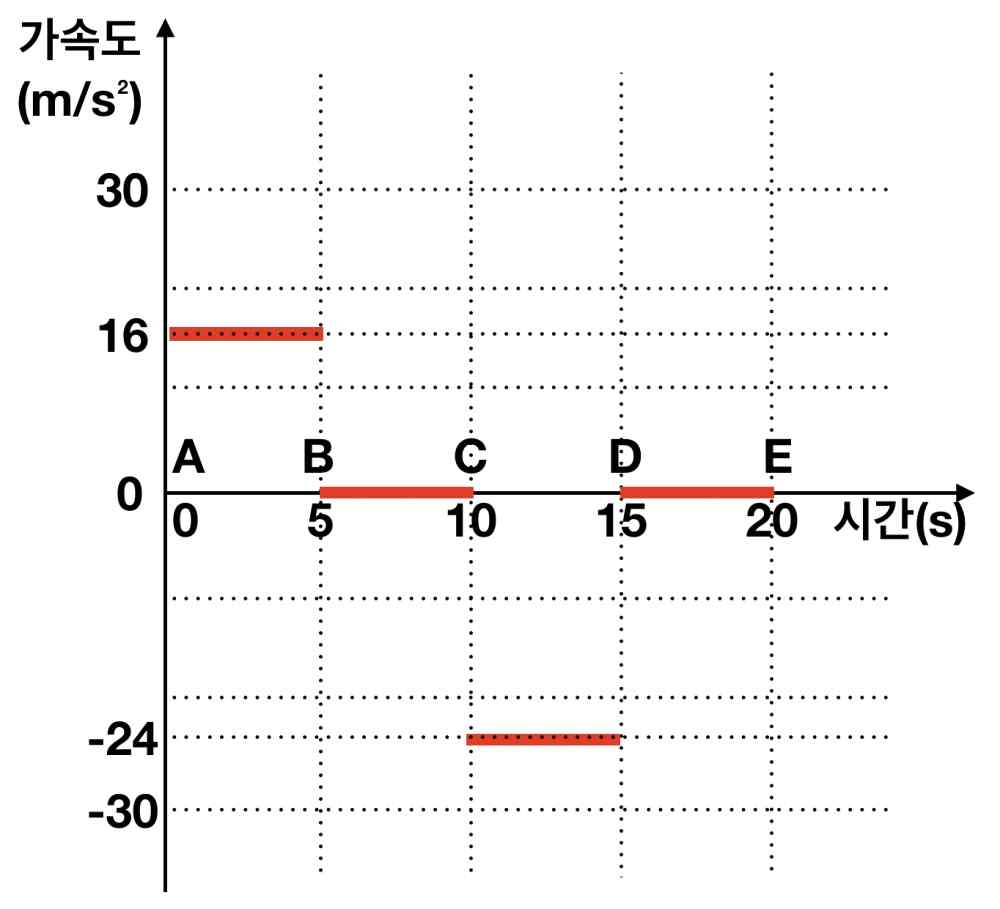

I-i
(가) 거리는 물체가 실제로 움직인 경로를 따라 측정한 거리이며, 변위는 처음 위치와 나중 위치 사이의 위치 변화이다. 거리는 방향에 관계없이 이동한 거리이므로
\[\frac{1}{2} \cdot 5 \text{ s} \cdot 80 \text{ m/s} + 5 \text{ s} \cdot 80 \text{ m/s} + \frac{1}{2} \cdot \frac{10}{3} \text{ s} \cdot 80 \text{ m/s} + \frac{1}{2} \cdot \frac{5}{3} \text{ s} \cdot 40 \text{ m/s} + 5 \text{ s} \cdot 40 \text{ m/s} = \frac{2900}{3} \text{ m}\]
이고, 변위는 이동 방향을 고려한 위치의 변화이므로 크기가
\[\frac{1}{2} \cdot 5 \text{ s} \cdot 80 \text{ m/s} + 5 \text{ s} \cdot 80 \text{ m/s} + \frac{1}{2} \cdot \frac{10}{3} \text{ s} \cdot 80 \text{ m/s} - \frac{1}{2} \cdot \frac{5}{3} \text{ s} \cdot 40 \text{ m/s} - 5 \text{ s} \cdot 40 \text{ m/s} = 500 \text{ m}\]
이며 오른쪽 방향이다.
(나) 시간-속도 그래프에서 기울기가 가속도이다. 따라서, AB 구간과 CD 구간은 등가속도운동이며 BC 구간과 DE 구간은 등속도 운동이다. 따라서 각 구간의 가속도를 구하여 그래프로 나타내면 오른쪽 그림과 같다.

(다) CD 구간은 등가속도운동으로서 가속도는 \(-24 \text{ m/s}^2\) 이다. 그리고 뉴턴의 제2법칙으로부터 물체에 작용한 알짜힘은
\[F = ma = 3 \text{ kg} \times (-24 \text{ m/s}^2) = -72 \text{ kg m/s}^2 = -72 \text{ N}\]
이다. (또는, 왼쪽으로 72 N 도 가능함.) 이 힘이 물체에 가해지는 동안 물체가 움직인 직선거리는 힘의 반대방향 (오른쪽)으로 100 m 이므로, 힘이 물체에 해 준 일은
\[W = F \cdot s = -72 \text{ kg m/s}^2 \times 100 \text{ m} = -7200 \text{ J}\]
이다.
(별해) 일과 운동에너지의 관계를 이용하면,
\[W = \Delta E_k = \frac{1}{2} \cdot 3 \text{ kg} \cdot (-40 \text{ m/s})^2 - \frac{1}{2} \cdot 3 \text{ kg} \cdot (80 \text{ m/s})^2 = -7200 \text{ J}\]
이다.
I-ii
(가) 정지해 있을 때 총 운동량은 0이므로, 운동량 보존 법칙으로부터 공 3개를 동시에 \(v\)의 속력으로 뒤쪽으로 던진 뒤 총 운동량은 0이 되어야 한다. 오른쪽을 속도의 양의 방향으로 잡을 때, 사람이 타고 있는 썰매의 속력을 \(v_f\)라고 하면, \(0 = -3mv + (M_1 + M_2)v_f\) 이다. 따라서 사람이 탄 썰매의 속도는
\[v_f = \frac{3mv}{M_1 + M_2}\]
이고 오른쪽으로 움직인다.
(나) 첫 번째 공을 던지고 난 후 사람이 탄 썰매의 속력을 \(v_1\)이라고 하면, 운동량 보존법칙으로부터
\[0 = -mv + (M_1 + M_2 + 2m)v_1\]
이므로 \(v_1 = \dfrac{mv}{M_1 + M_2 + 2m}\) 이다. 여기서 두 번째 공을 던질 때, 두 번째 공의 썰매에 대한 속력이 \(v\)이므로 얼음에 대한 속력은 \(v - v_1\)이 된다. 그러므로 운동량 보존법칙으로부터
\[(M_1 + M_2 + 2m)v_1 = -m(v - v_1) + (M_1 + M_2 + m)v_2\]
즉, 두 번째 공을 던진 후 썰매의 속력은
\[v_2 = v_1 + \frac{mv}{M_1 + M_2 + m}\]
이다. 마지막으로 세 번째 공을 던지면, 같은 방법으로 운동량 보존법칙을 이용하면
\[v_3 = v_2 + \frac{mv}{M_1 + M_2}\]
가 된다. 따라서, 위 식을 정리하면, 사람이 탄 썰매는
\[v_3 = \frac{mv}{M_1 + M_2} + \frac{mv}{M_1 + M_2 + m} + \frac{mv}{M_1 + M_2 + 2m}\]
의 속력으로 오른쪽으로 움직인다.